|
|
HELP FIND THE FOLLOWING LOCATIONS
PAGE 46
THE
SAINT:
The
Crime of the Century
(John Gilling:
January
1965)
Unknown 1 - Betty
Tregrath
finishes her work at International Chemicals, European Research
Division
Chemical before leaving on holiday. (This is stock footage dating back as far as 1959)
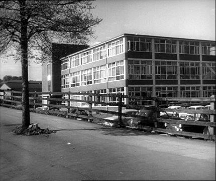
Unknown 2 - Betty Tregrath is taken by one of Raxel’s men to where her brother is supposedly being treated after a traffic accident.
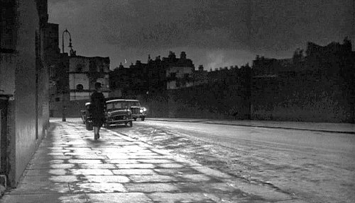
Unknown 3 - Betty Tregrath is taken by one of Raxel’s men to building where her brother is supposedly being treated by a doctor after a traffic accident.
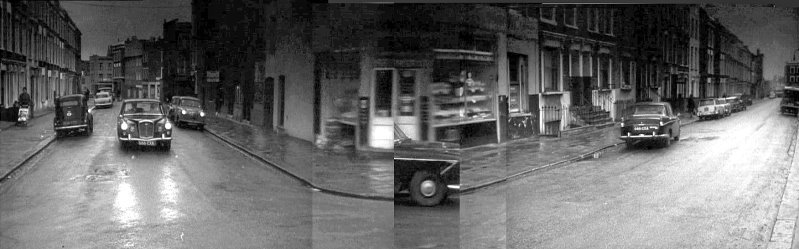
Unknown 3 - Posing as Carl Munster, Simon Templar is escorted by Crantor and Gregory from the Rake’s Progress Club.
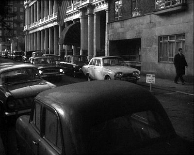
THE
SAINT:
The
Saint Steps In
(John Gilling :March/April
1964)
5, The Avenue, Radlett -
Taxi with Miss Grey in arrives at
Quinell’s
house for an appointment. two fake policemen are not far behind and
stop her
before she can get to the house. Saint intervenes. Walter Devan is
watching and
only makes himself known as
the two detectives flee. Simon returns that night to talk to Mr.
Quinell
and meets Andrea.
(Identified by Geoff
Dodd, October 2018)


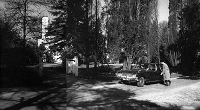
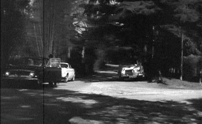
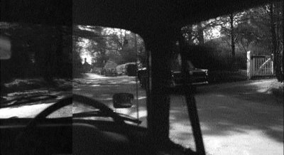
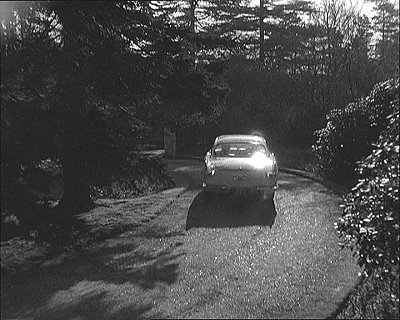
Unknown 3 - Fake detectives have village/wall back projection.
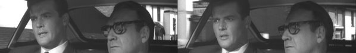
Unknown 4 - Saint is not far behind in his Volvo - Ingram Avenue?
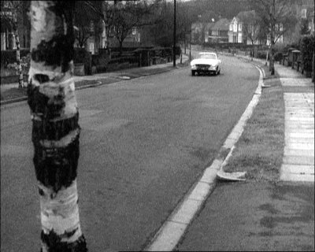
 Probably
on, or near, Ingram Avenue.
Probably
on, or near, Ingram Avenue.
Unknown 5 - BP of For sale signs
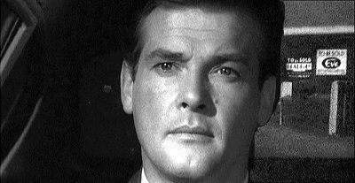

Unknown 6 - BP Wall plus shots of road as Simon drives Madeline, in his Volvo, to Calvin Grey's house
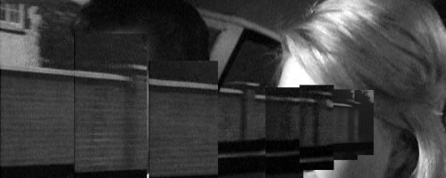
Unknown 7 - Simon drives Madeline, in his Volvo, to Calvin Grey's house in his Volvo.
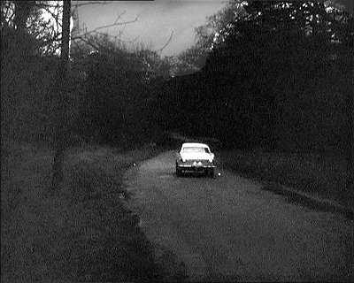
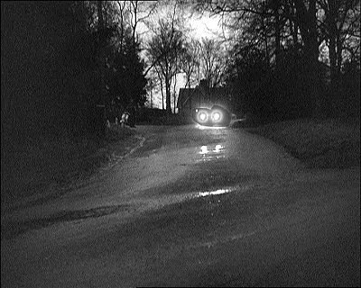
Unknown 8 - Villain drives off after Lab raid
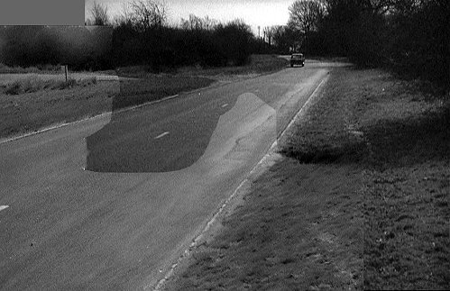
Unknown 9 - The lab police arrive to investigate the dead prowler. Villain sets fire to lab as a diversion to kidnap Madeline.
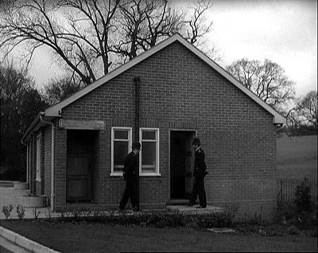
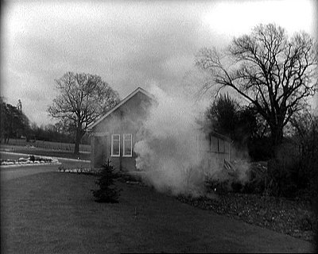
THE
SAINT:
One
The Saint Plays with Fire
(Robert S. Baker: 1963)
Redhill Street, London, NW1 –
Ralph arrives at John Kennet’s flat in a
taxi. A day or so later
Simon Templar arrives in his Volvo to speak to Ralph
Windlay.
(Idenified by John Pizinas, January 2024)

Unknown 2 – Simon Templar drives Jacko Jackman around in his Volvo. Route goes from modern houses to old village shops then to large houses behind high walls.
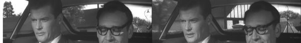
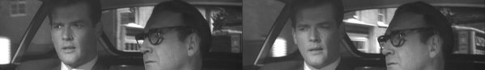
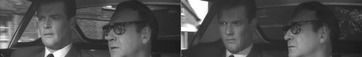
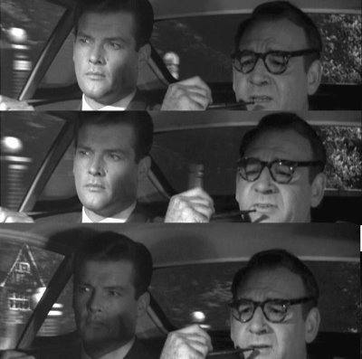
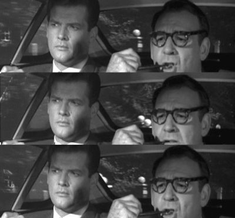
THE
SAINT: The Well Meaning
Mayor (Jeremy Summers: 1963)
Unknown 1 – Simon
Templar drives his Volvo towards the
seaside town of Seatondean.
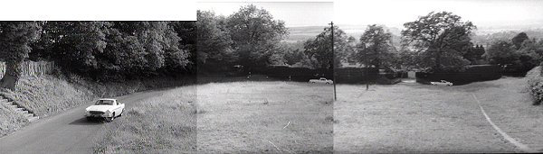
Also see in The Talented Husband when Simon drives John Clarron to the railway station.
Unknown 2 – The Saint drives through Seatondean to pop in on his good old friend Jack Bryant.
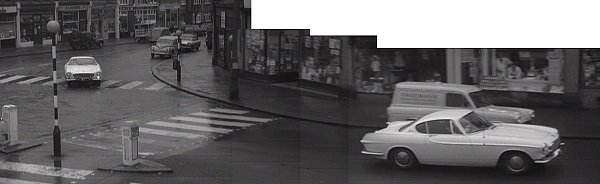
 Ian
S. Bolton – “not Peacehaven”
Ian
S. Bolton – “not Peacehaven”
 Looks
like the
van may say ‘FREEMANS BUTCHERS”, in which case: 12 Camberwell Church
Street,
SE5 / 67 Lordship Lane, SE22 / 159 New Cross Road, SE14
Looks
like the
van may say ‘FREEMANS BUTCHERS”, in which case: 12 Camberwell Church
Street,
SE5 / 67 Lordship Lane, SE22 / 159 New Cross Road, SE14
THE
SAINT:
The
Man Who Liked Toys
(John Gilling:
June 1964)
Avenue Close, Avenue Road, NW8 –
George Fowler (Maurice Kaufmann) is dropped
off at his flat by Enstone
in his Rolls
Royce. Soon after Marjorie Enstone
(Jeanne Moody) leaves watched by a
private detective, Bishop.
(Identified by Geoff Dodd, April 2023)
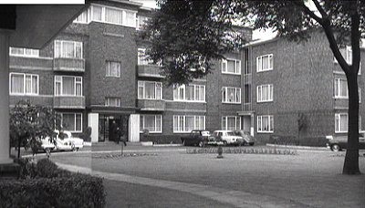
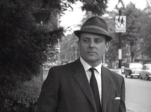
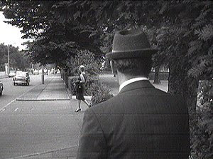
Think you know a spot? Need a bigger image? Email me.
< Previous | Index | Avengerland | Next >
Copyright © 2023 Anthony R. McKay